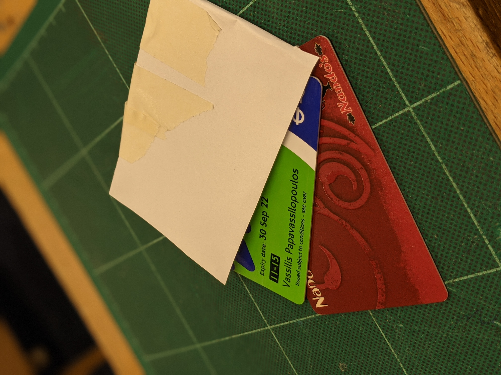
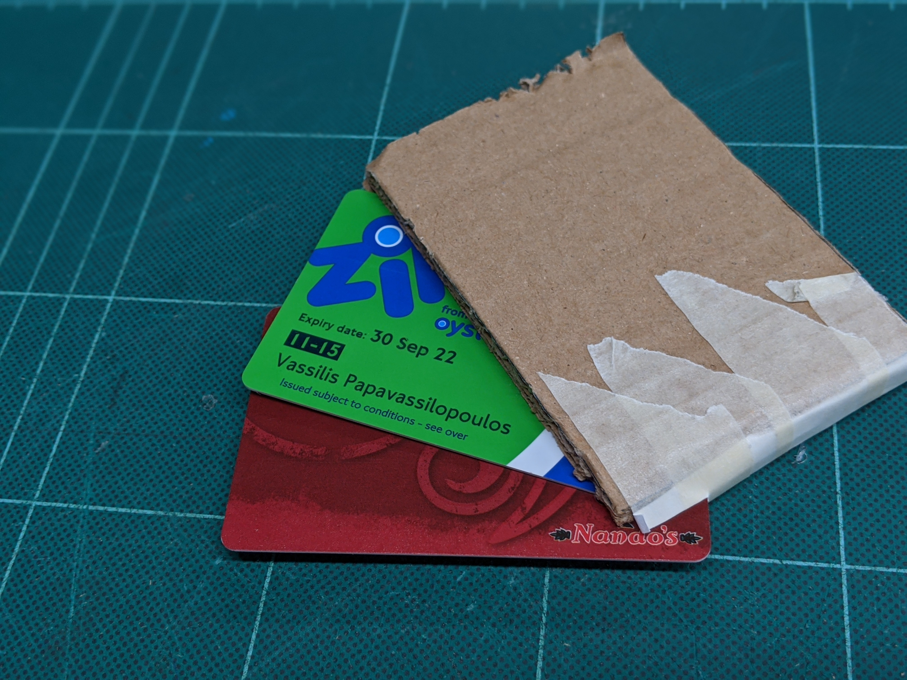
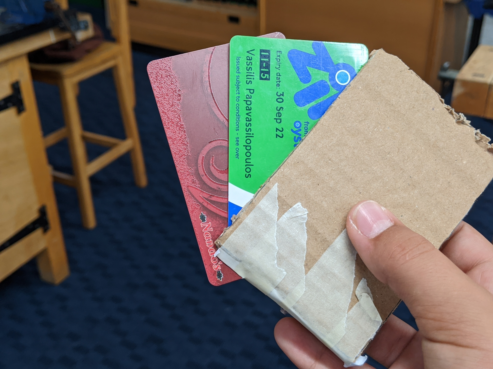
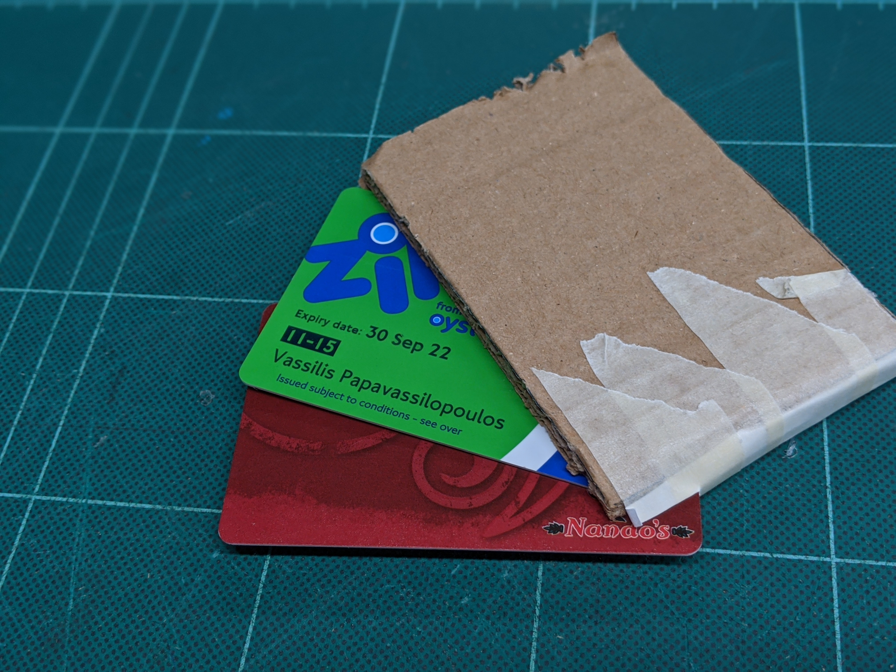
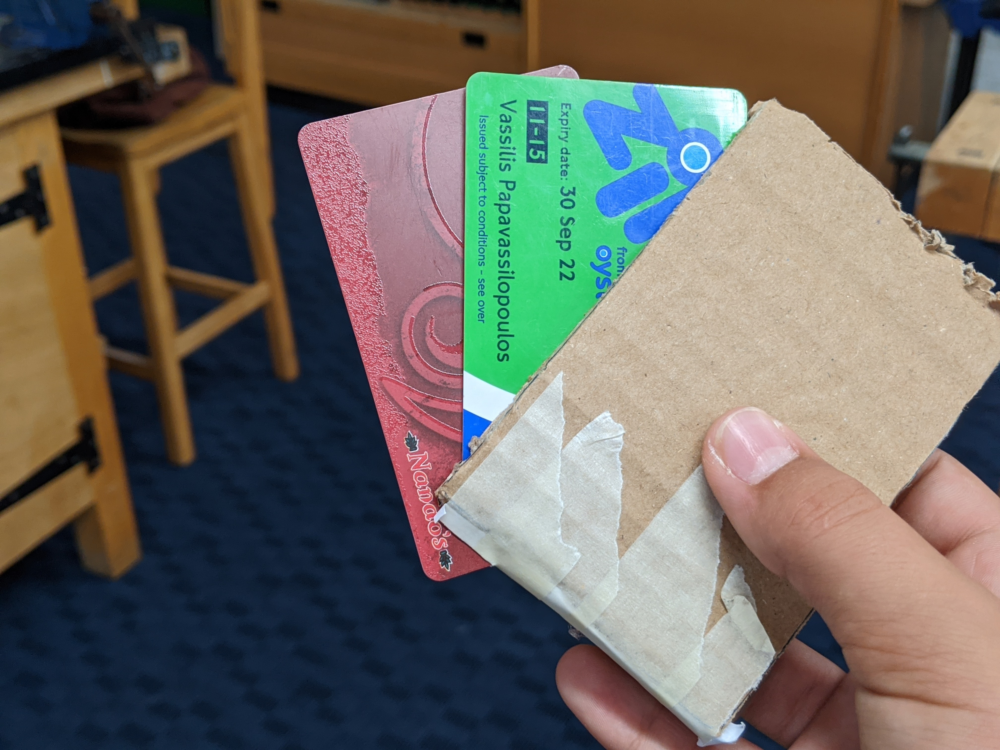

Empathy
The Make:Able Challenge
Brenda's Difficulties
Brenda is a 61 year old female writer with benign essential tremors and osteoarthritis.
Osteoarthritis

Symptoms
Benign Essential Tremors

Symptoms
The Project
Our goal was to design something for Brenda that she can use and will improve her life.
We came up with several ideas - An ergonomic food knife, an easy-to-use cardholder and a palmrest to imrove her typing accuracy. We decided upon the Cardholder.
Prototyping
Initial designs were cut out and made in paper, then in cardboard.
Paper Model

Cardboard Model

 



Changes and Decisions
Through the models, we decided on more and more ergonomic adaptations, adapting the product for Brenda. The cardboard model had a few more cutouts in order to assist the card in getting to its expanded state.
Computer-aided Design
We started to design models in OnShape, a free web-browser-based application used to design small-scale products.
Changes
Between the first and second image, the only difference was the edges. They were rounded for both safety and Aesthetics. A small cutout at the back was also made.
Mechanism
The idea was to have an easy to push button pull out the cards in the formation of a fan. This could be done using a "crocodile-tooth" arm which pushes the cards down into that formation. The bottn would be operated on the side of the device.